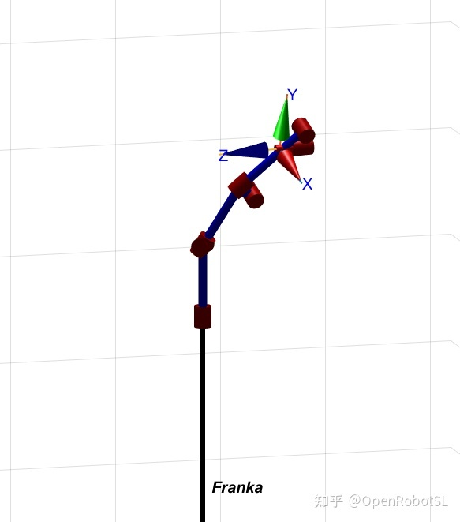
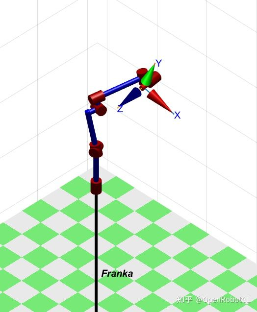
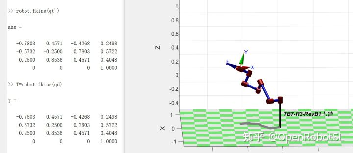
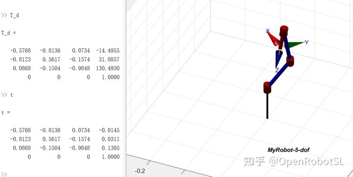
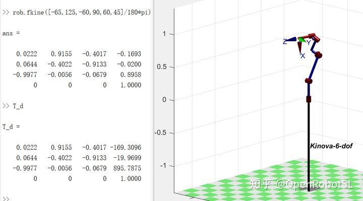

Home
本文转载自： https://zhuanlan.zhihu.com/p/391599810
最近在看一些基础东西的时候突然想到之前没解决的问题，一直在思考ikfast得实现方法或者逻辑，看了不少介绍分析都没有很明确的解释。
所以汇总了下有了一些想法，试着按照最多人理解的根据URDF也就是模型来生成算法，那么就说明并不是传统意义上的解析法（啥公式通用啊）和数值法（虽然依赖模型，但是通用啊一套公式，人家可是每次都是不同配置呀）。结合波士顿动力之前的讲座，他们运用的结构模型约束，感觉就是这类问题，所以方向就大体也定了从机械结构数学来分析。
于是我基本按照这种想法进行求解和配置。
先说明，解析精度高最快不通用。数值不稳定不加优化大概率失败实时性差。IKFAST很多时候慢非最优无解，KDL就是普通数值毛病，trackik有误差。
经过苦逼2天尝试，至少6-7轴目前稳定，任意机械臂状态下都可以找到解。用franka panda测试效果还不错，1MS稳定求解，算法内置各种优化方案比较通用比如冗余等，最优解等，这样速度会降低一些没有一个准确时间。目前有个比较大的缺点，比如UR，工业构型，理论是有8组以上的解，但是用自写算法，只返回一组最优的，如果增加配置约束，需要时间比较长才能求解出其他解，暂时没有想法解决，通过工程倒是可以提速，但是没意义还不如直接解析。
之后稳定封装出来哈。暂时不开源源码和原理。(UR,IIWA,FRANKA,PUMA,SWAYER,KINOVA6-7dof5DOF,4DOF,测试没问题，但是结构七里八拐，DOF越多时间越慢，理论是支持人体双足，四足这种 单条链条结构)
FRANKA PANDA 7DOF
https://www.zhihu.com/zvideo/1400960683140333568优化求解，初始期望是连杆干涉得，求解后找到一个不碰撞得构型


Swayer 7DOF

5DOF 大部分四足用的机械臂，这个ik fast问题会很多 目前自写求解比较稳定

Kinova 6DOF

======================================================================
我的测试结果及程序
下面是我测试的代码：